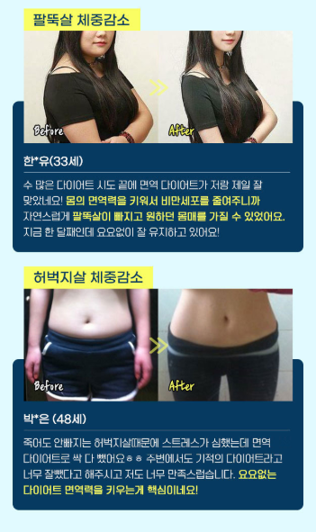
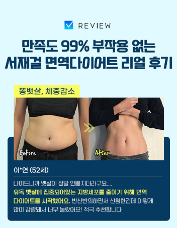
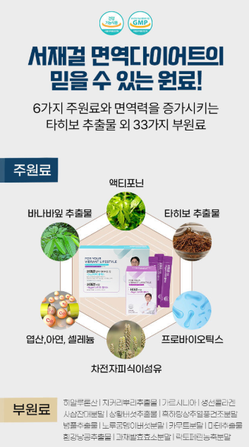
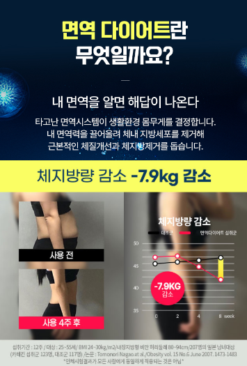

다이어트를 알아보다 보면 단순히 섭취량을 줄이는 방법뿐 아니라 생활습관과 식생활을 함께 관리하는 다양한 프로그램을 접하게 됩니다. 그중 하나가 온라인에서 소개되고 있는 서재걸 면역 다이어트입니다. 이 페이지에서는 특정한 감량 결과를 보장하기보다는 프로그램이 어떤 내용으로 소개되고 있는지 살펴보고, 체중관리를 계획할 때 함께 생각해볼 점을 정리해보겠습니다.
서재걸 다이어트란 무엇일까요?
서재걸 다이어트는 홍보 자료에서 '면역 다이어트'라는 이름으로 소개되고 있는 프로그램입니다. 일반적인 체중관리뿐 아니라 식생활과 장 건강, 생활습관 등에 관심이 있는 소비자들이 함께 찾아보는 형태로 알려져 있습니다.
다만 다이어트 결과는 개인의 생활습관과 식사량, 운동량, 건강 상태 등에 따라 크게 달라질 수 있습니다. 따라서 특정 사례의 감량 수치를 모든 사람에게 동일하게 적용할 수 있는 결과로 받아들이기보다는 참고 자료로 보는 것이 좋습니다.

전후 사진이나 특정 감량 사례는 한 사람의 경험을 보여주는 자료일 수 있으며 개인에 따라 결과에는 차이가 있을 수 있습니다.
서재걸 면역 다이어트에서 소개하는 특징
제공된 홍보 자료를 살펴보면 프로그램은 '면역 다이어트'라는 개념을 중심으로 소개되고 있습니다. 또한 프로그램 구성과 원료, 후기 사례 등을 주요 정보로 안내하고 있습니다.

원료 구성 확인
제품이나 프로그램을 이용하기 전에는 어떤 성분과 원료가 포함되어 있는지 확인하는 것이 좋습니다.
식생활 함께 관리
체중관리는 특정 제품 하나보다는 평소 식사와 활동량을 함께 살펴보는 것이 중요합니다.
지속적인 생활습관
단기간의 변화보다 일상에서 유지할 수 있는 습관을 만드는 것이 체중관리에 도움이 될 수 있습니다.
광고와 실제 정보 구분
감량 수치나 후기를 볼 때는 개인의 경험인지 일반적으로 기대할 수 있는 결과인지 구분해서 살펴보세요.
소개 자료에 나온 원료 구성도 확인해보세요
제공된 자료에는 여러 가지 주원료와 부원료가 소개되어 있습니다. 제품을 선택할 때는 단순히 원료의 이름만 보기보다는 실제 제품의 식품 유형, 원재료명, 섭취 방법과 주의사항을 제품 표시사항에서 직접 확인하는 것이 중요합니다.

일반적인 다이어트 프로그램이나 건강 관련 제품이라도 개인의 건강 상태에 따라 적합하지 않을 수 있습니다. 임신·수유 중이거나 질환 치료 및 약물 복용 중이라면 제품 사용 전 의료진이나 전문가와 상담하세요.
제공된 서재걸 다이어트 후기 자료 살펴보기
다이어트 프로그램을 알아볼 때 많은 분들이 후기를 참고합니다. 제공된 자료에도 여러 사용자의 전후 이미지와 경험담이 소개되어 있습니다.
다만 체중 변화와 외형 변화는 개인별 식습관, 활동량과 건강 상태 등에 따라 다를 수 있기 때문에 후기와 같은 결과가 모든 사용자에게 동일하게 나타난다고 볼 수는 없습니다.


다이어트를 시작한다면 함께 관리하면 좋은 것들
체중관리를 할 때는 하나의 방법에만 의존하기보다는 평소 생활습관 전체를 함께 살펴보는 것이 좋습니다.
특히 지나치게 빠른 체중감량을 목표로 하거나 극단적으로 식사를 제한하는 방식은 몸에 부담이 될 수 있습니다. 자신의 현재 건강 상태를 고려해 현실적인 계획을 세우는 것이 중요합니다.
온라인의 특정 감량 사례보다 자신의 건강 상태와 생활 패턴에 맞는 체중관리 계획을 세우는 것이 더 중요합니다.